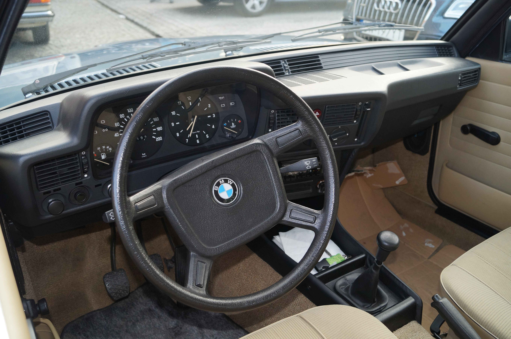

Prima generație (E21; 1975)
BMW E21 este prima generație a mașinilor executive compacte BMW Seria 3, care au fost produse din iunie 1975 până în 1983 și au înlocuit BMW seria 02. Seria a fost construită exclusiv într-un stil de caroserie sedan cu două uși (cu excepția decapotabilelor fabricate de Baur). Spre deosebire de predecesorul său, nu mai era oferită o caroserie touring.
Modelele inițiale au fost produse cu motoare pe benzină cu patru cilindri carburate de 1,6 L, 1,8 L și 2,0 L. Injecția de combustibil a fost introdusă la sfârșitul anului 1975 pe 320i-dar în 1977, un motor cu 6 cilindri în linie carburat a înlocuit atât modelele 320, cât și 320i, în timp ce o versiune detunată a injecției cu patru cilindri a fost pusă în vânzare în Statele Unite.
În 1978, Seria 3 a primit primul său motor cu șase cilindri cu injecție de combustibil în 323i; iar în 1981, un motor detunat de 1.6 L a fost oferit în 315. Caroseria cabriolet, fabricată de Baur, a fost produsă din 1978 până în 1981, cu toate motoarele disponibile.
Nu a existat un model BMW M3 pentru generația E21, dar mai multe modele în ediție limitată au fost produse pe baza modelului cu cel mai mare motor, 323i cu șase cilindri.
E21 a fost înlocuit de seria 3 E30 în 1982.
Dezvoltarea
Sub conducerea acționarului său majoritar (51%), Herbert Quandt, BMW a decis să înlocuiască vechiul BMW seria 02. În iulie 1975, Consiliul de Administrație al BMW a prezentat publicului E21 la Stadionul Olimpic din Munchen.
Stilul
Vederea frontală a noii mașini a fost dominată de grila BMW care iese în evidență clar față de capacul radiatorului. Stilul noii mașini semăna cu seria 5 E12, care era în producție odată cu introducerea modelului E21. La fel ca multe alte modele BMW, stâlpul C al E21 are un Hofmeister-Knick. Paul Bracq, Director de Design la BMW din 1970 până în 1974, este creditat cu stabilirea direcției de proiectare a E21. BMW E21 este, potrivit Design Museum London, una dintre "cincizeci de mașini care au schimbat lumea".
Interiorul
Designul cabinei modelului E21 a marcat introducerea unui nou concept de design, cu consola centrală și zona centrală a tabloului de bord înclinate spre șofer. Aceasta a devenit parte a filozofiei de design interior BMW de mulți ani. Ca semn al siguranței pasive, toate marginile și elementele de control din interior au fost rotunjite și căptușite.
Șasiul și suspensia
Cu un ampatament de 2,6 m (102 in), lungimile caroseriei din față și din spate au fost minime. Ecartamentul a măsurat 1.364 mm (53,7 in) în față și 1.377 mm (54,2 in) în spate. Suspensia a încorporat direcție cu raft și pinion și suspensie MacPherson în față și suspensie independentă de tip braț semi-trailing în spate. Designul suspensiei spate provoacă modificări ale camberului, care pot introduce "oversteer snap" la limitele de manevrare. Servofrânele aveau discuri pe roțile din față, în timp ce roțile din spate aveau frâne cu tambur (cu excepția modelului 323i care avea discuri rotunde).
Producția
Producția E21 a început în iunie 1975 și s-a încheiat în decembrie 1983. Estimările producției totale variază între 1.359.444 de mașini și 1.364.039 de mașini cu conversiile Baur TopCabriolet (dacă nu sunt deja incluse în numerele inițiale ale șasiului BMW) . E21 a fost produs la uzina BMW din Munchen, Germania.